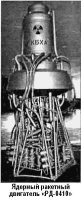

Советские ядерные двигатели
В Советском Союзе работы над ядерными ракетными двигателями начались в середине 50-х годов. В НИИ-1 (научный руководитель — Мстислав Келдыш) инициатором и руководителем работ по ЯРД был Виталий Иевлев. В 1957 году он сделал по этой теме сообщение Игорю Курчатову, Анатолию Александрову и Александру Лейпунскому. Это были люди действия, имевшие возможность принимать решения, не ожидая указаний сверху. По их инициативе на Семипалатинском ядерном полигоне в небывало короткий срок был сооружен уникальный графитовый реактор. Первые успехи подтолкнули к следующим шагам по созданию ЯРД.
Исследовательские работы по этой теме были начаты в Институте атомной энергии у Курчатова, в ОКБ-456 у Глушко, в НИИ-1 у Келдыша и в ОКБ-670 у Бондарюка. 30 июня 1958 года появилось первое постановление ЦК КПСС и Совета Министров о разработке тяжелой ракеты, использующей ЯРД. Этим же постановлением предусматривалась разработка тяжелых ракет с использованием ЖРД на криогенных высокоэнергетических компонентах — кислороде и водороде. В подготовке постановления активно участвовали Курчатов, Королев, Келдыш и Глушко.
В ОКБ-1 Королев поручил исследовать возможность создания ракеты с использованием ЯРД Василию Мишину, Сергею Крюкову и Михаилу Мельникову. В течение 1959 года проводились расчеты, прикидки и компоновки различных вариантов тяжелых ракет-носителей с кислородно-водородным ЖРД на первой ступени и с ЯРД на второй ступени.
Постановление от 30 июня 1958 года узаконило уже ведшиеся работы. Эскизный проект ракеты на основе использования ЯРД был в ОКБ-1 разработан и утвержден Королевым 30 декабря 1959 года.
Проект предусматривал использование в качестве первой ступени ракеты шести блоков первой ступени ракеты «Р-7».
Вторая ступень — центральный блок был по существу ядерным реактором. В ядерном реакторе рабочее тело подогревалось до температуры свыше 3000 К. В качестве рабочего тела ОКБ-456 предлагало использовать аммиак, а ОКБ-670 — смесь аммиака со спиртом. Сам двигатель представлял собой четыре сопла, через которые и вылетали струи раскаленных ядерной реакцией газов.
В эскизном проекте были обстоятельно рассмотрены несколько вариантов ракет с ЯРД. Самой впечатляющей была «суперракета» длиной 64 метра, диаметром 9 метров, со стартовой массой 2000 тонн и массой полезного груза до 150 тонн на орбите ИСЗ. На первой ступени этой «суперракеты» предлагалось установить такое число ЖРД, чтобы получить общую стартовую тягу в 3000 тонн. Глушко предлагал для этого разработать ЖРД на токсичных высококипящих компонентах, но Королев и Мишин этот вариант категорически отвергли, и в проекте предусматривались только кислородно-керосиновые ЖРД Николая Кузнецова. У него пока в начальной стадии разработки находился двигатель «НК-9» для первой ступени глобальной ракеты «ГР-1» — тягой до 60 тонн. Таких двигателей для первой ступени ракеты с ЯРД требовалось 50 (!). Одно это делало проект ядерной «суперракеты» малореальным.
Эскизным проектом для начала предлагалась комбинированная ракета со стартовой массой 850–880 тонн, выводящая на орбиту высотой 300 километров полезный груз 35–40 тонн. Первая ступень ракеты принималась аналогичной блочной конструкции ракеты «Р-7» и набиралась из шести блоков с ЖРД. Центральный блок был ядерно-химической ракетой.
Своим чередом шли и работы над ЯРД. Уже самый первый анализ показал, что среди множества возможных схем космических ядерных энергодвигательных установок наибольшие перспективы имеют три: с твердофазным ядерным реактором, с газофазным ядерным реактором, электроядерные ракетные ЭДУ. Схемы отличались принципиально; по каждой из них наметили несколько вариантов для развертывания теоретических и экспериментальных работ.
Принципы работы ЯРД не вызывали сомнений. Однако конструктивное выполнение (и характеристики) его во многом зависели от «сердца» двигателя — ядерного реактора и определялись прежде всего его «начинкой» — активной зоной.
Поддержанный постановлениями правительства, НИИ-1 строил электродуговые стенды, неизменно поражавшие воображение, — десятки баллонов от 6 до 8 метров высотой, громадные горизонтальные камеры мощностью свыше 80 кВт, броневые стекла в боксах. Участников совещаний вдохновляли красочные плакаты со схемами полетов к Луне, Марсу и звездам. Предполагалось, что в процессе создания и испытаний ЯРД будут решены вопросы конструкторского, технологического, физического плана.
Летом 1959 года сотрудники НИИ-1 Виталий Иевлев и Юрий Трескин доложили о постановке эксперимента на реакторе «ИГР», первый запуск которого состоялся в 1961 году. 1 июля 1965 году был рассмотрен эскизный проект реактора «ИР-20-100» для будущего ядерного двигателя «РД-0410». Кульминацией стал выпуск техпроекта тепловыделяющих сборок «ИР-100» (1967 год), состоящих из 100 стержней.
«Ракетная» часть «РД-0410» была разработана в воронежском Конструкторском бюро химической автоматики (КБХА), «реакторная» (нейтронный реактор и вопросы радиационной безопасности) — Институтом физики и энергии (Обнинск) и Курчатовским институтом атомной энергии.
Согласно принятой концепции жидкие водород и присадкагексан подавались с помощью турбонасосного агрегата в гетерогенный реактор на тепловых нейтронах с тепловыделяющей сборкой, окруженной замедлителем из гидрида циркония. Их оболочки охлаждались водородом. Отражатель имел приводы для поворота поглотительных элементов (цилиндров из карбида бора).

За пять лет, с 1966 по 1971 год, были созданы основы технологии реакторов-двигателей, а еще через несколько лет была введена в действие мощная экспериментальная база под названием «экспедиция № 10» (впоследствии — опытная экспедиция НПО «Луч» на Семипалатинском ядерном полигоне).
Особые трудности встретились при испытаниях. Обычные стенды для запуска полномасштабного ЯРД использовать было невозможно из-за радиации.
Испытания реактора решили проводить на атомном полигоне в Семипалатинске, а «ракетной части» — в НИИхиммаш (Загорск, ныне — Сергиев Посад).
Для изучения внутрикамерных процессов было выполнено более 250 испытаний на 30 «холодных двигателях» (без реактора). В качестве модельного нагревательного элемента использовалась камера сгорания кислородно-водородного ЖРД конструкции Исаева.
Максимальное время наработки составило 13000 секунд при объявленном ресурсе в 3600 секунд.
В процессе испытаний удались максимальная тяга в 3528 килограммов и скорость истечения — 9000 м/с.
Для испытаний реактора на Семипалатинском полигоне были построены две специальные шахты с подземными служебными помещениями. Одна из шахт соединялась с подземным резервуаром для сжатого газообразного водорода.
От использования жидкого водорода отказались из финансовых соображений.
Перед экспериментальным запуском реактор опускался в шахту с помощью установленного на поверхности козлового крана. После запуска реактора водород поступал снизу в «котел», раскалялся до 3000 °К и огненной струей вырывался из шахты наружу. Несмотря на незначительную радиоактивность истекающих газов, в течение суток находиться снаружи в радиусе полутора километров от места испытаний не разрешалось. К самой же шахте нельзя было подходить в течение месяца. Полуторакилометровый подземный тоннель вел из безопасной зоны сначала к одному бункеру, а из него — к другому, находящемуся возле шахт.
По этим своеобразным «коридорам» и передвигались специалисты.
Результаты экспериментов, проведенных с реактором в 1978–1981 годах, подтвердили правильность конструктивных решений. В принципе ЯРД был создан. Оставалось соединить две части и провести комплексные испытания.
Однако двигатель остался невостребованным. Экспедицию на Луну и Марс отменили, а использовать «РД-0410» на околоземных орбитах было накладно, да и просто опасно.